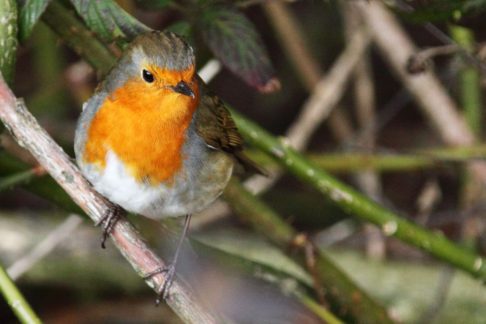
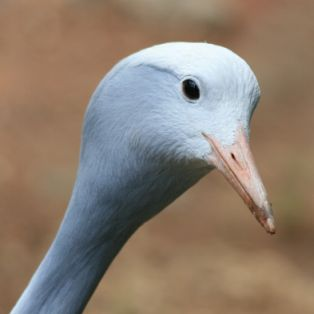
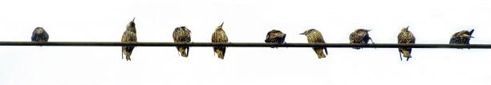
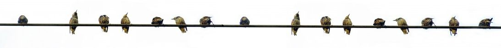
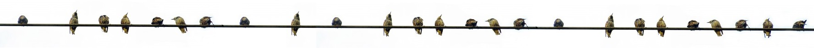

Hello and Welcome!
 Bird Day was first established by Justin Forcier and Ryan Goff on April 26th, 2011 in Fargo, North Dakota, at a approximately 5 AM when they heard the sounds of singing birds gently dancing in through their window.
Overcome by the beauty of their music, the duo immediately declared the day Bird Day. Since then, every fourth Friday in April has been celebrated as Bird Day, and will be until the end of time. The next Bird Day is on Friday April 25th, 2014.



What are people saying about birds today?
Tweets about "#birds OR #bird OR #birdday"So what are you waiting for?
Go out buy your favorite bird related food, your favorite bird inspired snacks, pop in a bird movie, or drink some bird booze!
Bird Day is coming, and now you're part of the noble tradition that is Bird Day! Start your own Bird Day parties and spread the word!